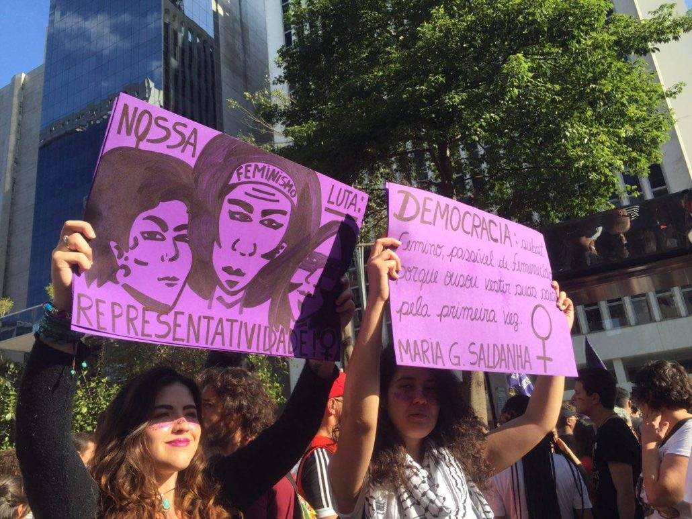
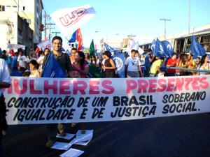

“O que mata não é o machismo, mas a insensibilidade das pessoas”
Medo, violência e silenciamento tem feito parte do cotidiano das mulheres desde o seu nascimento até a sua morte. Esses sentimentos e ação humana são frutos da sociedade patriarcal em que vivemos, reproduzidos e perpetuados não somente pelos indivíduos detentores do caráter masculino, mas também pela mídia, indústria da moda, redes sociais, convívio social e familiar.
Devido a gama de inúmeros fatores perpetuados historicamente, as mulheres são condicionadas a pensá-los como um fator “natural”. Foi somente no início do séc. XIX que as mulheres passaram a ganhar reconhecimento político, social e até mesmo humano. Tendo isso, deram o insight para a legitimação do “ser” feminino dentro da sociedade ocidental. Este insight é conhecido como “movimento feminista”.
Diferenças Importantes:
| Feminismo | Femismo | Machismo |
|---|---|---|
| Igualdade de direitos e deveres entre os gêneros. | Superioridade das mulheres em relação aos outros gêneros. | Superioridade dos homens em relação os outros gêneros. |
Patriarcado
O patriarcado é algo inerente à sociedade, ainda nos tempos atuais. Esse sistema se encontra intrínseco ao coletivo, que sempre conviveu com a hierarquia firmada entre homens e mulheres, sendo sempre o homem o sujeito superior na relação hierárquica. Deste modo, Simone de de Beauvoir (1970) alude que desde os registros históricos mais antigos, o homem surgia como responsável pelas tarefas mais pesadas e em contrapartida, a mulher, sempre posta como inferior, visto que, se houvesse alguma tarefa que exigisse um pouco mais da mulher e ela não conseguisse realizar, era imediatamente classificada como impotente.
A história das lutas das mulheres e do feminismo remota há mais de 200 anos, sendo marcada por diversos momentos e fatos históricos marcantes. Geralmente, considera-se como marco da historiografia feminista a luta organizada das mulheres por igualdade de direitos e deveres durante a Revolução Francesa.
Mas se pensarmos na história do feminismo em um sentido mais amplo, considerando também os momentos em que mulheres, individual ou coletivamente, protestaram contra as diversas formas de dominação patriarcal (seja em suas vertentes racistas, capitalistas e heteronormativas ou não) e reivindicaram para si condições de vida melhores, essa história e os fatos que a marcam são muito mais diversos.
Pensando em todo o histórico do movimento feminista, mesmo quando assim não o era reconhecido, seus atos sempre polemizaram a sociedade tradicional, independentemente da época em que ocorriam. Atualmente, observa-se uma grande relutância de parte da sociedade brasileira em aceitar a existência de uma cultura do estupro; grande rejeição às manifestações de grupos feministas (tendo por exemplo o conhecido movimento organizador de protestos “Marcha das Vadias”), normalmente atrelados à esquerda política no país, e discussões dos mais diversos tópicos em redes sociais. Até mesmo a amamentação em lugares públicos foi alvo de ataques de grupos contrários ao ato.
Atualmente, uma das grandes rixas entre o movimento feminista e os políticos da bancada evangélica do Congresso Nacional, está relacionada à questão da descriminalização do aborto, que há algum tempo passou a ser uma das mais discutidas bandeiras do feminismo no Brasil.
Outra questão levantada por vozes do feminismo, é a pouca inserção feminina na política e de políticas destinadas à mulher. A questão sempre será que, dedireita ou esquerda , conservador ou não, os direitos da mulher devem ser respeitados. Políticas públicas devem ser elaboradas para atender às carências da população feminina, para impor a igualdade de gênero, assegurar a vida da mulher, garantir sua participação em espaços onde não estão presentes ou sofrem preconceito, combater o assédio velado ou explícito, entre tantas outras questões.
